A comprehensive catalog of functional screen captures and descriptions covering every feature per user type (Student, Teacher, and System Administrator) for Pedro Victorina Calo Elementary School.
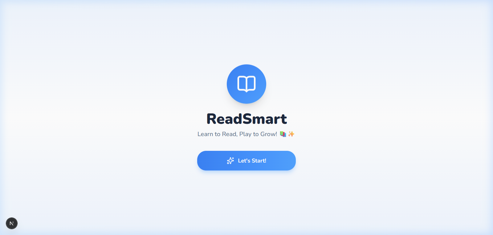
Serves as the gateway to ReadSmart, authenticating students and faculty members with credential validation and role-based redirecting.
/dashboard and teachers to /teacher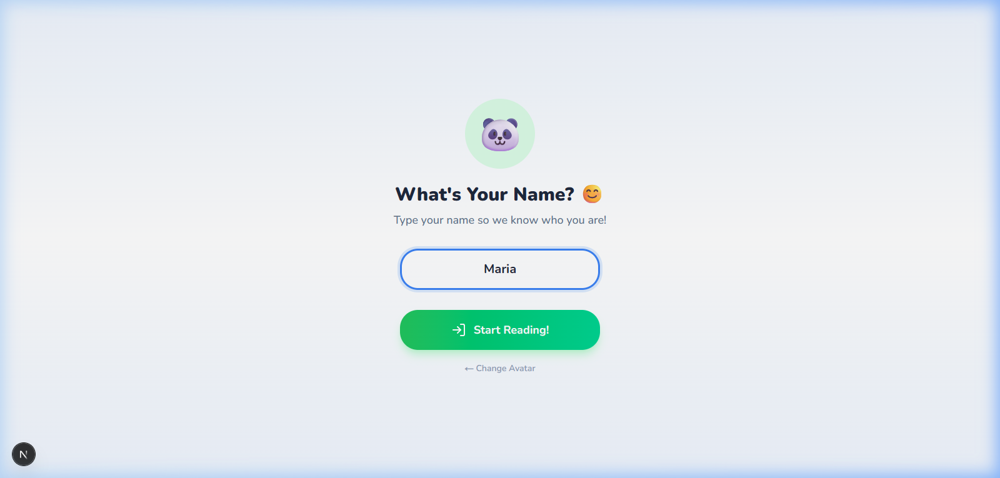
Enables grade school pupils to create their learner accounts and automatically link to their official class section and teacher advisory.
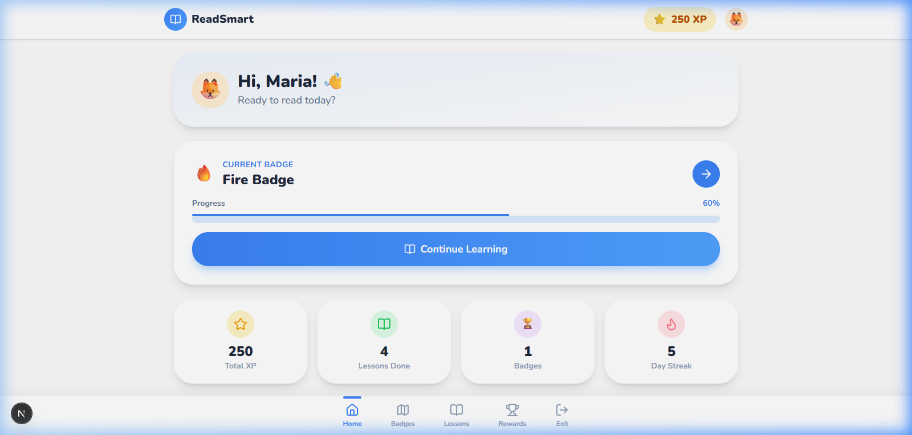
The main student command center providing quick access to active reading lessons, daily reading streaks, and accumulated experience points (XP).
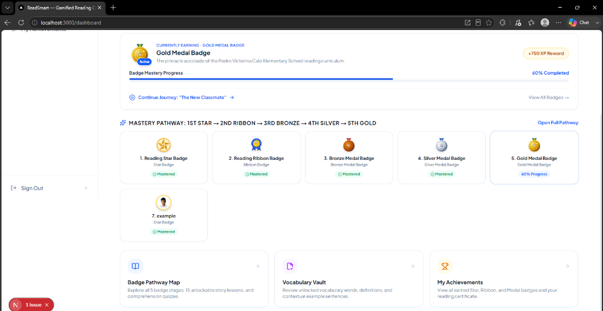
Visualizes sequential reading progression across 5 structured achievement stages: 1st Star, 2nd Ribbon, 3rd Bronze, 4th Silver, and 5th Gold.
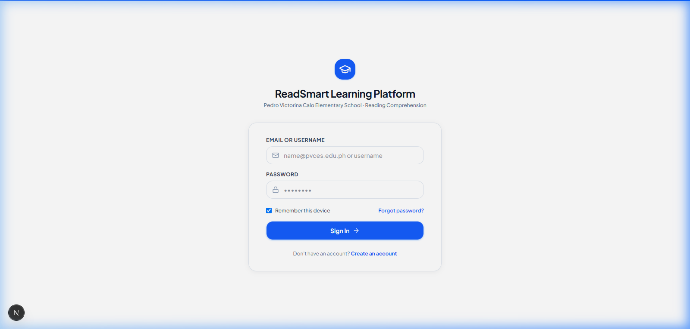
Categorized collection of all curated story lessons, allowing learners to browse passages by difficulty level (Easy, Medium, Hard).
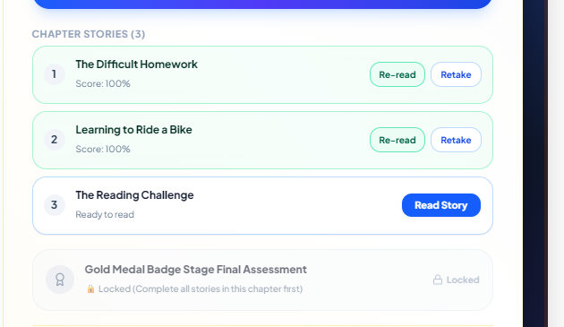
Breaks each chapter into bite-sized stories that must be read before unlocking the Stage Final Assessment and badge accolades.
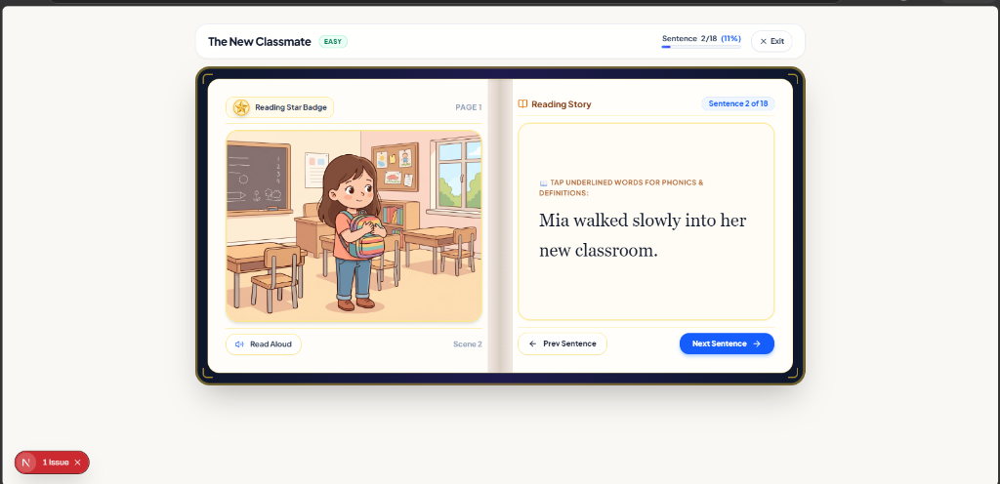
The flagship reading experience featuring custom scene illustrations, synchronized sentence progression, and assistive AI narration.
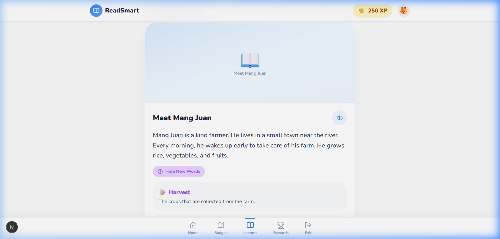
Provides immediate vocabulary scaffolding whenever a pupil encounters an unfamiliar word during active reading.
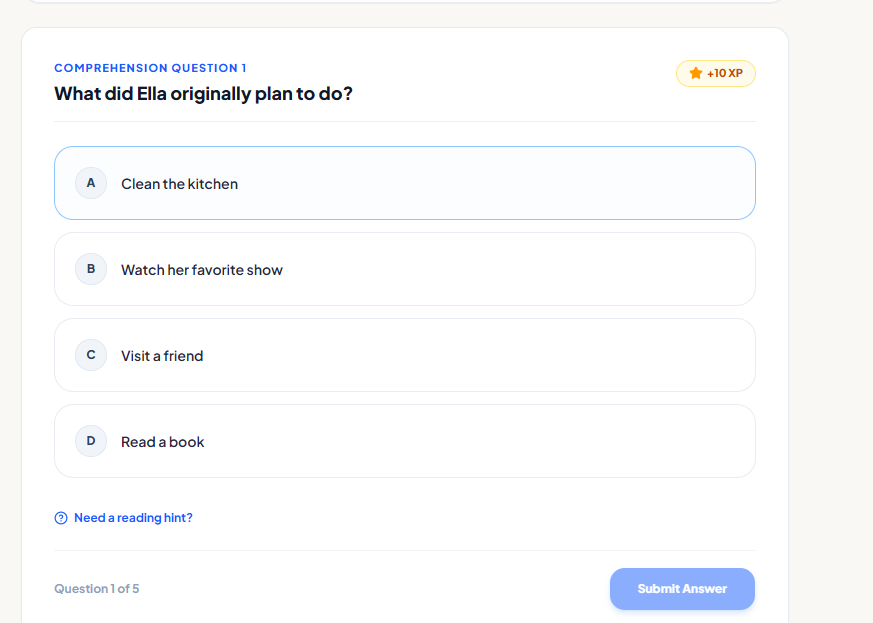
Evaluates reading recall, context clues, and moral understanding through multiple-choice questions configured by teachers.
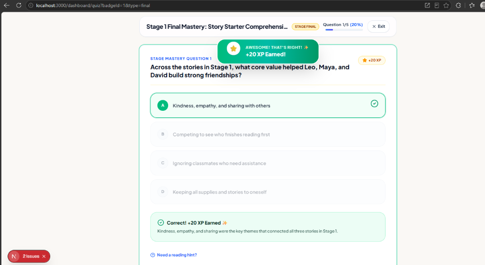
Provides immediate positive reinforcement upon answer submission, explaining why an answer is correct to solidify comprehension.
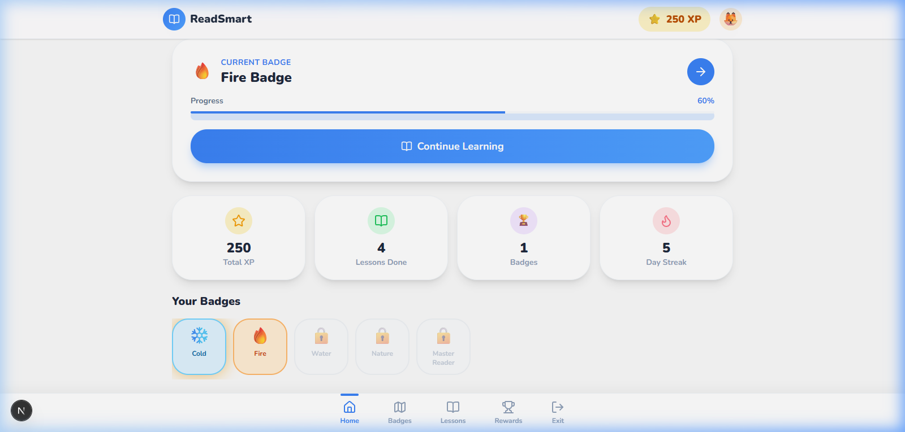
Showcases unlocked and upcoming accolades earned by completing stories and demonstrating high comprehension accuracy.
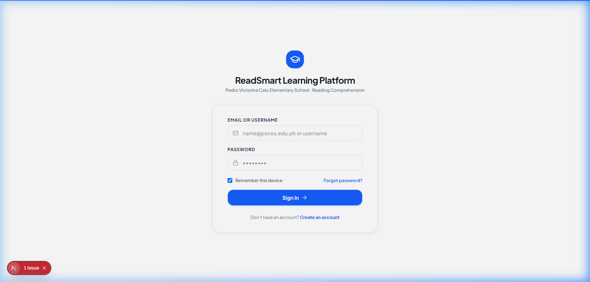
Displays ranking standings within the student's enrolled section based on total XP and consistent reading streaks.
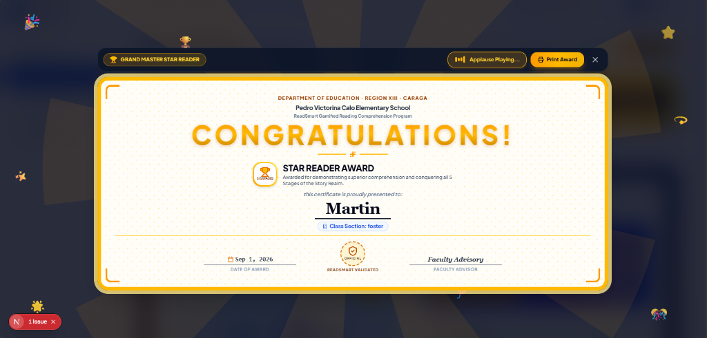
An official DepEd Region XIII compliant certificate generated upon mastering all 5 Story Realm stages.
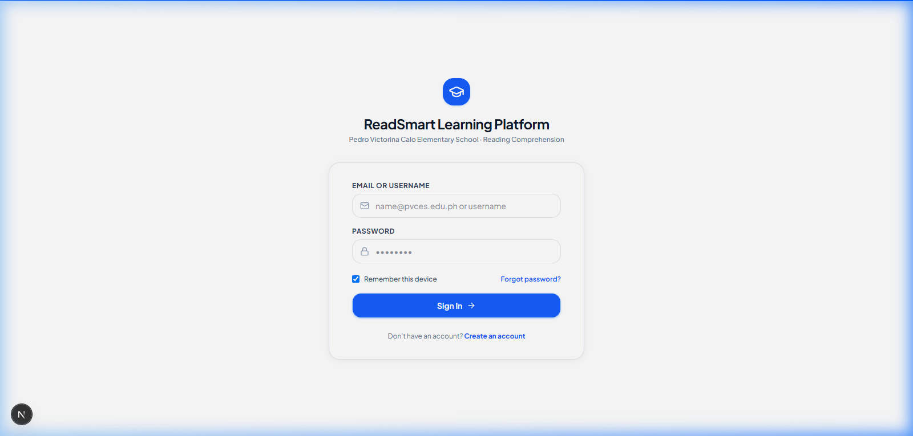
Allows young learners to personalize their reading identity by selecting from 24 custom-illustrated, diverse boy and girl character portraits.
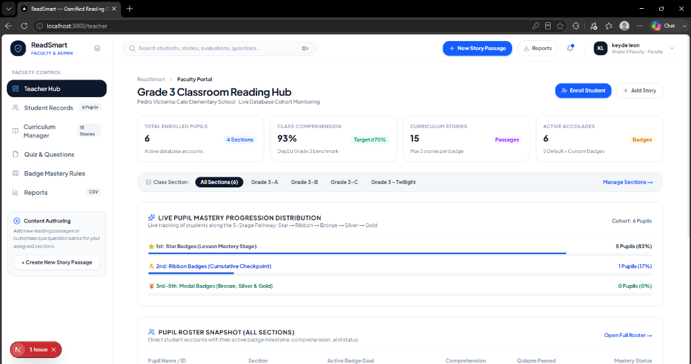
Executive dashboard providing real-time data on class-wide comprehension benchmarks, active accounts, and stage mastery distribution.
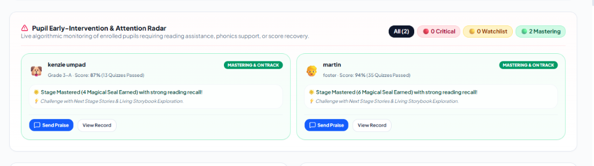
An automated alert system that detects struggling readers needing phonics assistance, score recovery, or reading intervention.
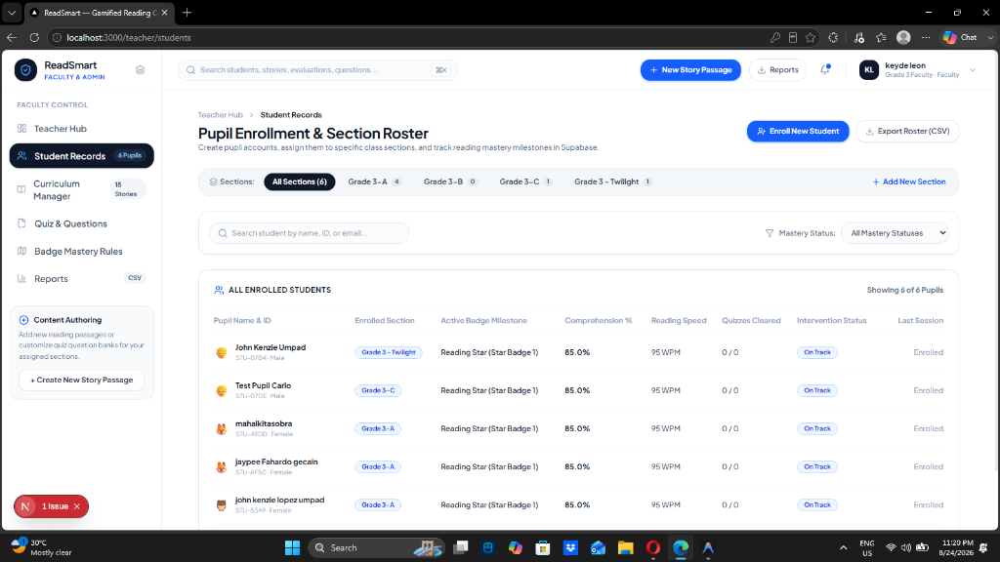
Comprehensive roster table displaying individual learner metrics including comprehension scores, reading speed (WPM), and quiz counts.
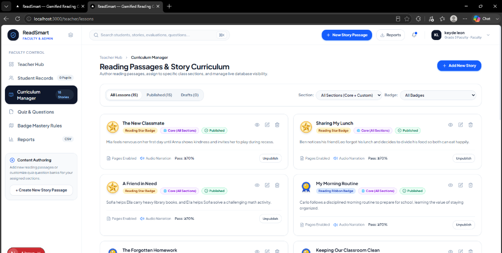
Empowers teachers to manage and customize the story reading curriculum stored in Supabase.
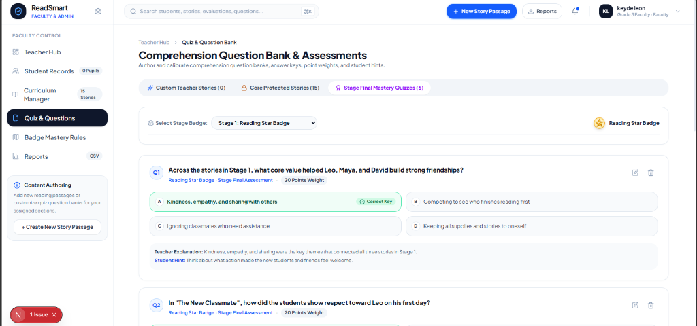
A centralized repository for reviewing, editing, and authoring comprehension quiz questions for every story passage.
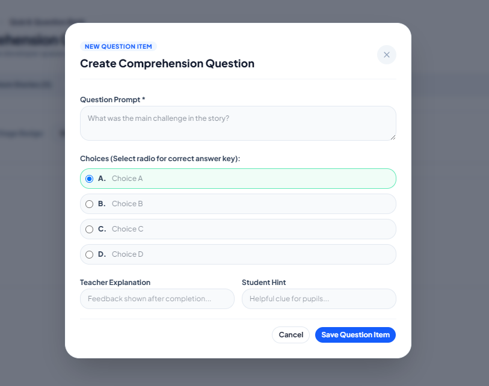
A guided form allowing faculty to craft high-standard DepEd comprehension questions with custom choices, hints, and explanations.